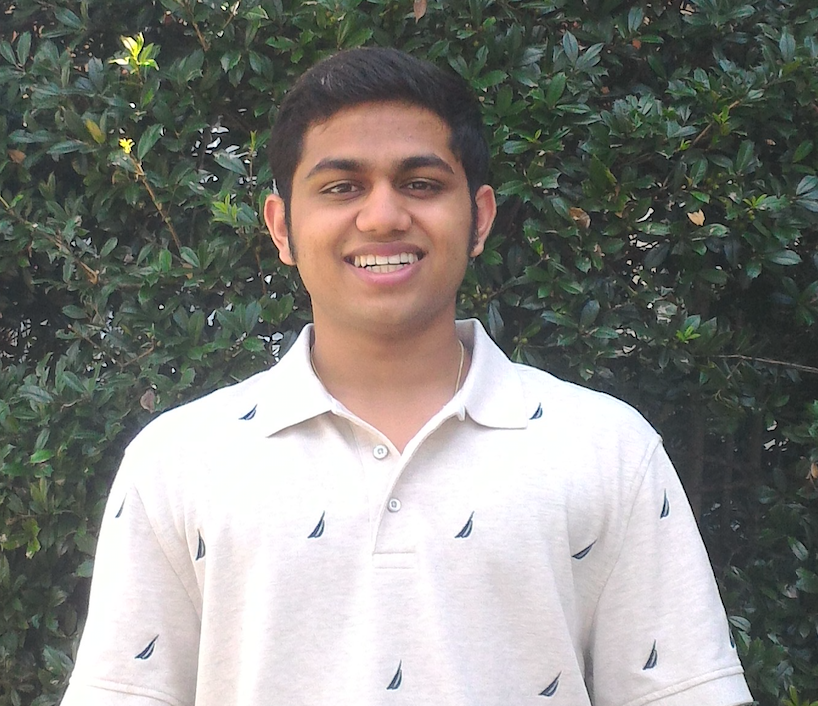

|
Brahma Pavse
Welcome! I am a Master's student at The University of Texas at Austin, where I study problems in reinforcement learning (RL) under the guidance of my advisor, Peter Stone.
In the Spring of 2019, I completed my undergraduate honors thesis in the area of RL and imitation from observation (IfO) under Peter Stone. I have also been an active member of UTAustinVilla, our RoboCup Simulation team.
Email /
CV /
Google Scholar /
LinkedIn
|

|
|
Research
While I am broadly interested in all of RL and RL-related topics, I have had exposure to off-policy RL and learning from demonstration (LfD). Currently, I am pursuing an M.S. thesis related to policy sampling error in temporal difference (TD) learning algorithms.
|
Reinforced Inverse Dynamics Modeling for Learning from a Single Observed Demonstration (RIDM)
Brahma S. Pavse
Faraz Torabi,
Josiah Hanna,
Garrett Warnell,
Peter Stone
ICML workshop 2019. Under review at ICRA 2020.
bibtex
We propose a novel reinforcement learning and imitation from observation algorithm that helps an agent learn from a single observed demonstration with no task-specific information encoded in the state space. We also show that the PID controller can be used as an effective inverse dynamics model.
|
UT Austin Villa: RoboCup 2019 3D Simulation League Competition and Technical Challenge Champions
Patrick MacAlpine,
Faraz Torabi,
Brahma S. Pavse
Peter Stone
RoboCup Symposium 2019
bibtex
An invited book chapter detailing the specifics our team, UTAustinVilla, after winning the RoboCup 3D Simulation League.
|
UT Austin Villa: RoboCup 2018 3D Simulation League Champions.
Patrick MacAlpine,
Faraz Torabi,
Brahma S. Pavse,
John Sigmon,
Peter Stone
RoboCup Symposium 2018
bibtex
An invited book chapter detailing the specifics our team, UTAustinVilla, after winning the RoboCup 3D Simulation League.
|
|
{kind=link}